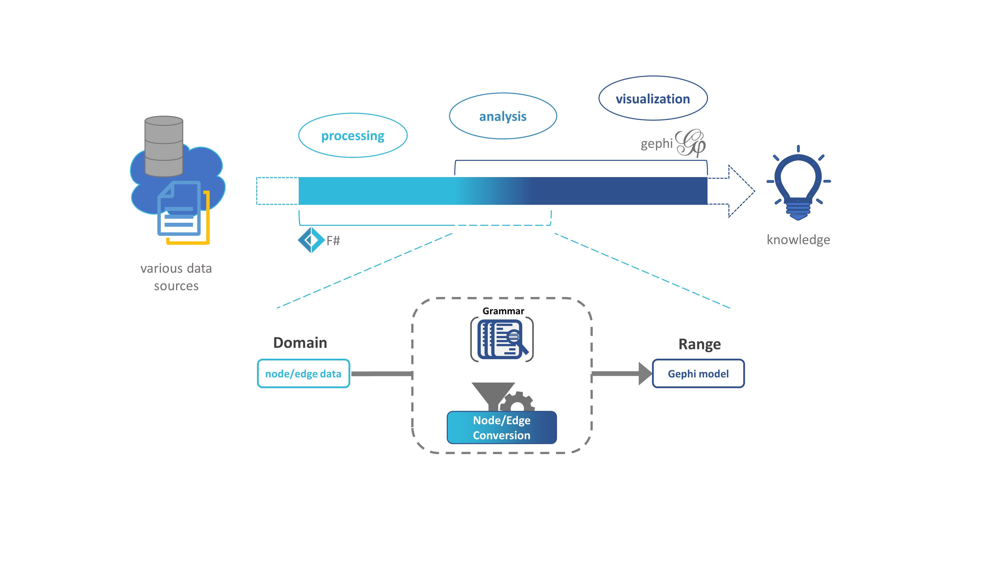

FSharpGephiStreamer
FSharpGephiStreamer is intended to close the gap between F# and the functionality of the Gephi software project, integrating network visualization power of gephi into any kind of data science workflow designed in F#. It leverages the functionality of the graph streaming plugin of the It uses a short Grammar which makes it possible to convert any kind of Object to nodes and any kind of relationship between these objects to edges of a graph. This is especially useful because network science is independent from specific data structures/types.

Ressources
Installation
See how to setup FSharpGephiStreamer
Docs
- See how to convert any kind of nodes/edges to gephi readable objects using the
Grammarmodule - See how to stream graph data to gephi
- Check out the API Reference for information about types/functions in this library